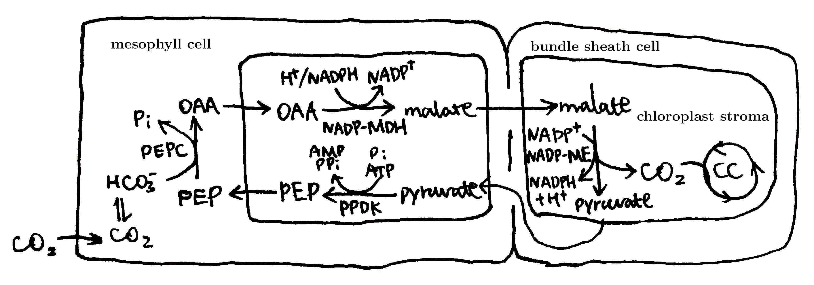
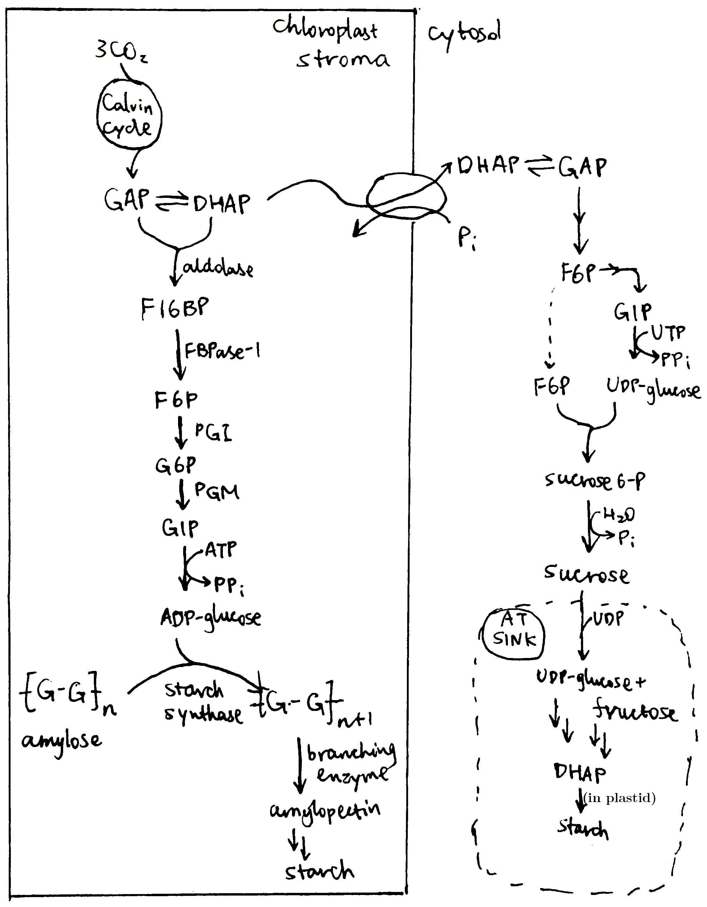
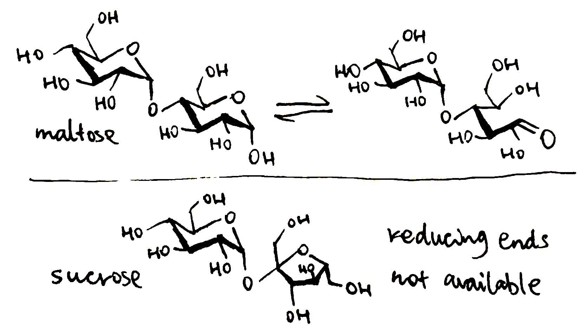

Essay Title
- Discuss how CO2 is fixed in green plant.
- Explain how and why plant assimilates their products in the form of sucrose and starch.
CO2 Fixation in Green Plants
RuBisCO and the Calvin Cycle
Broadly speaking, carbon fixation is incorporating inorganic carbon (in the form of CO2 or HCO3-) into organic/biological compounds. This term is also used to refer specifically to 'autotrophic carbon fixation', which means sustainable production of new biological molecules from CO2. Various autotrophic carbon fixation pathways have been found in bacteria and archea. In all plants, however, the Calvin cycle is the only pathway, which starts with the reaction catalysed by RuBisCO (ribulose-1,5-bisphosphate carboxylase/oxygenase): \begin{equation} \text{ribulose 1,5-bisphosphate} + \ce{CO2 ->[\text{RuBisCO}]} 2 \times \text{3-phosphoglycerate} \end{equation}
The Calvin cycle then goes on to the reduction phase, using ATP and NADPH to convert 3-phosphoglycerate to glyceraldehyde 3-phosphate (resembling part of the gluconeogenesis pathway). 5/6 of glyceraldehyde 3-phosphate is converted back to RuBP by rearrangement of carbon skeleton catalysed by transketolases, and 1/6 is the net gain of triose.

The overall equation for net gain of one glyceraldehyde 3-phosphate (GAP) is: \begin{equation} \ce{3CO2 + 9 ATP + 6 (NADPH + H+)-> GAP + 9 (ADP + Pi) + 6 NADP+} \end{equation}
Carbon Fixation in C4 and CAM Plants
RuBisCO can add molecular oxygen to RuBP, producing 3-phosphoglycerate (PGA) and 2-phosphoglycolate (2PG). Two 2PG molecules can be converted back to one PGA though a series of reactions in the chloroplast, peroxisome and mitochondia. The process, known as photorespiration, results in loss of organic carbon and consumption of ATP. The rate of photorespiration is increased by lowered CO2 availability or increased temperature.
Plants have evolved different mechanisms to avoid photorespiration, and these plants are broadly classified into two classes: C4 plants and CAM plants. They both use PEP carboxylase to capture CO2 and pass it to RuBisCO when/where oxygenase activity is low.
C4 plants have spatial isolation between initial capture of CO2 and RuBisCO. There are 3 variant forms of C4 mechanism and this is the most common one:
CAM plants have termporal isolation between initial capture of CO2 and RuBisCO. The enzymes involved are the same as C4 carbon fixation; the difference is that only one cell type is involved. At night, stomata are open, allowing entry of CO2 and formation of malate. Malate is stored in the vacuole. In the daytime, stomata are closed (preventing photorespiration and water loss), and malate are released from the vacuole, cleaved by malic enzyme, releasing CO2 for Calvin cycle.
Sucrose and Starch
The primary product of Calvin cycle is glyceraldehyde 3-phosphate (GAP), which itself is a sugar (triose). Most GAP is converted into sucrose and starch. The majority of sucrose produced by photosynthetic tissues (source) is exported to non-photosynthetic tissues (sink) in a process known as translocation, which occurs in phloem. Some of the sucrose received by the sink is directly oxidised to produce ATP, and some are converted to amino acids and lipids. Yet others are converted to starch for long term storage (especially in specialised sink tissues such as potato tubers). The table below shows basic properties of sucrose and starch:
| Sucrose | Starch |
|---|---|
|
|
Starch and sucrose synthesis in plants
Starch is synthesised in the chloroplast stroma. The pathway resembles glycogen synthesis in animals, except that ATP, rather than UDP, is used to activate glucose.
Sucrose is synthesised in the cytosol. The export of each DHAP is coupled with the import of orthophosphate so the number of phosphate groups is balanced.
Why sucrose is suitable for transport
Sucrose is a non-reducing sugar, which means it is more chemically stable. All sugars have either a ketone or aldehyde group (in their open chain form), and the ketone group can tautomerise to aldehyde group. The aldehyde group makes monosaccharides chemically active because it can be oxidised to carboxyl group while ruducing other compounds (thus 'reducing sugar'). The carbonyl group of hexoses and pentoses can be attacked by \(-\ce{OH}\) on another carbon to form a 5- or 6-membered ring. The carbonyl group is then converted to a hemiacetal or hemiketal group (hemi- means it has one \(-\ce{OH}\) and one \(-\ce{OR}\) group), and that position is said to be anomeric. If the anomeric \(-\ce{OH}\) group is involved in a glycosidic bond, the sugar cannot be converted back to its open chain form. This explains why maltose is a reducing sugar while sucrose is not, though both are monosaccharides:
Sucrose has about the same osmotic activity as glucose but has twice as much sugar. The mechanism of translocation is called 'pressure flow'. At source, sucrose is actively loaded into the sieve tube. This lowers the water potential, so water passively diffuse into the tube, building up pressure potential (part of water potential). At sink, sucrose is removed from the sieve tube and water follows to leave. This lowers water potential so water flows in the sieve tube from source (high water potential) to sink (low water potential), carrying solutes (including sucrose) along its travel. The ability of sucrose to lower water potential is the same because the solute potential (or osmotic potential) is related only to the concentration of dissolved particles (molecules or ions) regardless of size (to a first approximation): $$\Psi_\pi=-c_jRT$$ (here I am not sure how the pressure in the sieve tube and/or loading of sucrose is regulated and/or limited. If they are not regulated, transport of glucose can achieve the same amount of sugar transport efficiency by using higher pressure.)
Why starch is suitable for storage
Starch is insoluble and thus osmotically inactive. This means it can be stored in a plastid in large amounts without causing water to flow into the compartment that causes it to burst.
Starch and glycogen are all polymers of glucose, but glycogen is soluble while starch is not. Glycogen, made of one structure, has a small size Starch has a complex structure and contains both crystalline and amorphous parts. (Bertoft 2017) Starch is made of amylopectin (major component) and amylose (minor component) and amylose requires preexisting amylopectin granule for its formation.
Amylopectin and glycogen are all branched glucose polymers, but their branching pattern causes them to adopt different structures and have different solubilities in water.
In glycogen, α-1,6 branches are evenly distributed within the glycogen particle. This branching pattern in allows its spherical growth, and it is also size-limiting because it leads to a structure that is increasingly crowded towards the periphery. Glycogen particles therefore have a maximum diameter of about 42nm and are entirely soluble in water.
In amylopectin, α-1,6 linkages are asymmetrically distributed, leading to clusters of chains (shown in D) that allows indefinite growth.
The small portion containing the branches is called the amorphous lamella of the unit cluster while the chains generated through the branches intertwine to form the double helical structures that define the unit crystalline lamella. (Ball 2011)
SAQ
Explain why plant needs both cyclic and non-cyclic photophosphorylation.
Cyclic photophosphorylation produces ATP only, and it has no substrate requirements other than light. Non-cyclic photophosphorylation consumes water, and produces NADPH and ATP, which are then mostly used to produce glyceraldehyde 3-phosphate in the Calvin cycle.
Obviously plants cannot rely on cyclic photophosphorylation only. Not all plant cells have chloroplast and they have to produce energy from respiration, fueled by sucrose produced in photosynthetic tissues.
To explain whu non-cyclic photophosphorylation is also necessary, quantitative analysis is needed. In non-cyclic photophosphorylation, for each H2O to be split and 4 electrons to be transferred, 2 NADPH is produced and 12 protons are pumped into the thylakoid lumen (Allen 2002). Chloroplast ATP synthase has 14 c subunits (Alexander 2018), so $$\dfrac{12}{14} \times 3 = 2.57$$ 2.57 ATP is produced per 2 NADPH (ratio=1.286). However, for a net gain of one glyceraldehyde 3-phosphate, 9 ATP and 6 NADPH are required (see equation 2), with ratio=1.5. This means that, using non-cyclic photophosphorylation alone, the ATP produced will not be enough for the Calvin cycle to proceed. This additional ATP is provided by cyclic photophosphorylation.
References
- Smith, A. M., Coupland, G., Dolan, L., Harberd, N., Jones, J., Martin, C., . . . Amey, A. (2010). Plant biology. New York, NY: Garland Science.
- William G. Hopkins, & Hüner, N. P. A. (2008). Introduction to Plant Physiology (4th ed.): Wiley.
- Alberts, B., Johnson, A., Lewis, J., Morgan, D., Raff, M., Roberts, K., & Walter, P. (2014). Molecular biology of the cell (6th ed.): Garland Science.
- Nelson, D. L., & Cox, M. M. (2017). Lehninger principles of biochemistry (7th ed.): W. H. Freeman.
- Hahn, A., Vonck, J., Mills, D. J., Meier, T., & Kühlbrandt, W. (2018). Structure, mechanism, and regulation of the chloroplast ATP synthase. Science, 360(6389), eaat4318. doi:10.1126/science.aat4318
- Allen, J. F. (2002). Photosynthesis of ATP—Electrons, Proton Pumps, Rotors, and Poise. Cell, 110(3), 273-276. doi:https://doi.org/10.1016/S0092-8674(02)00870-
- Bertoft E. (2017). Understanding Starch Structure: Recent Progress. Agronomy, 7(3), 56; https://doi.org/10.3390/agronomy7030056
- Ball, S., Colleoni, C., Cenci, U., Raj, J. N., & Tirtiaux, C. (2011). The evolution of glycogen and starch metabolism in eukaryotes gives molecular clues to understand the establishment of plastid endosymbiosis. Journal of Experimental Botany, 62(6), 1775-1801. doi:10.1093/jxb/erq411